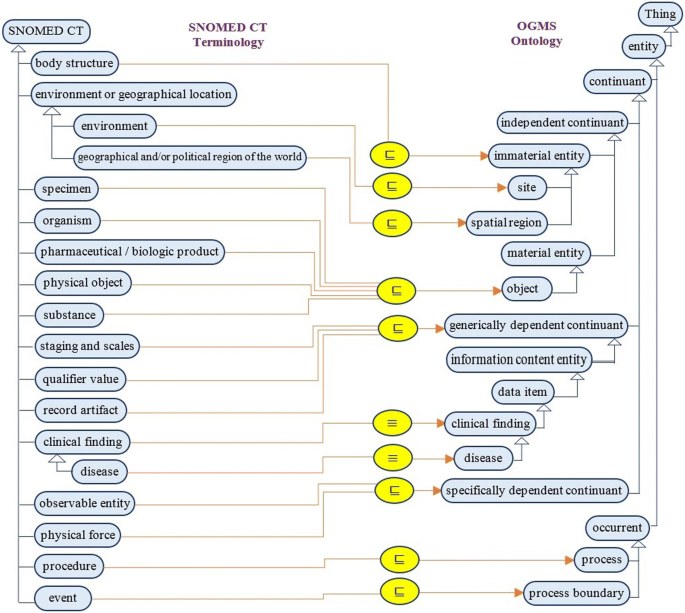

医学影像与诊断报告结构化
探索SNOMED CT如何革新医学影像诊断报告的标准化与结构化，提升临床决策支持与医疗数据互操作性
SNOMED CT提供全球最全面的多语言临床术语集，确保医学影像报告用语的标准化与一致性
将传统的叙述性报告转化为结构化数据，支持计算机辅助诊断和大数据分析
实现不同医疗系统间的无缝数据交换，提高医疗协作效率与诊断准确性
结构化数据为人工智能算法提供高质量训练素材，提升AI辅助诊断能力
SNOMED CT (系统性医学术语集 - 临床术语) 是全球最全面的多语言临床医疗保健术语集。它由超过35万个医学概念组成，这些概念通过明确定义的关系相互连接，形成复杂的语义网络。
SNOMED CT为电子健康记录系统提供了一种通用语言，使临床医生能够以标准化、一致的方式记录患者数据，同时保持其临床相关性和细致程度。
深入了解 SNOMED CT